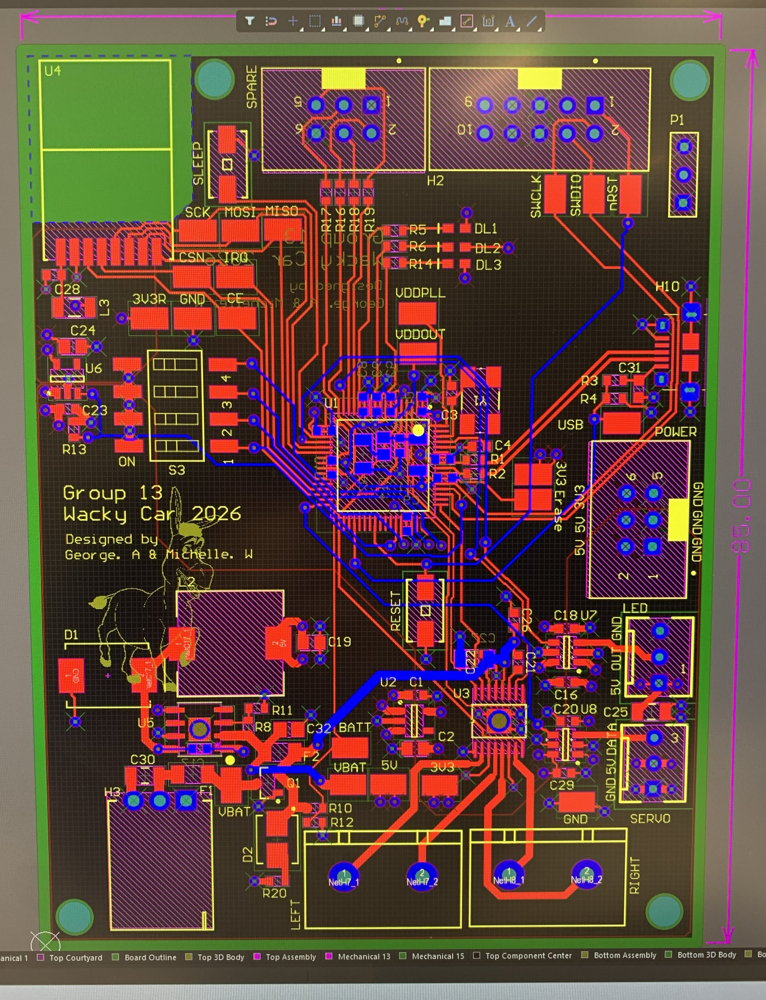

Gyroscope controlled RC car
University Project
Overview
As part of my ENCE461 course, we are desinging a set of two PCB boards. One with a gyroscope to go on a hat, and the other with an H-bridge to go on a RC car. The goal of the project is to get the RC car to move based on the position of the hat and is assesed in a race between students.
Each board features 5V buck converters, two linear voltage regulators, a SAM4S microcontroller and a nRF24 radio.
Till now, we have designed the schematics and PCB boards in Altium and are currently waiting for them to be manufacutred before we start assembly. I'm super excited to get them working and begin programming the movement!


Tools and skills
- Altium designer to create schematic and PCB design.
- Component selection and wiring information parsed from datasheets.
- Teamwork collaboration and task delegation.
Limitations and Improvements
- The largest limitation is that the project hasn't been completed yet. I thought I should include it anyway because it is already one of my all-time favourites.
- The CLK, MISO and MOSI lines run parellel and close together from the MCU to the radio, most likely inducing a significant amount of cross talk. This would be fixed by observing the 3W rule - which I will be doing from now on!